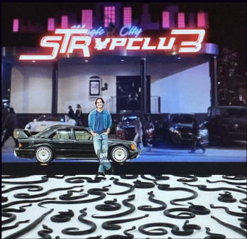
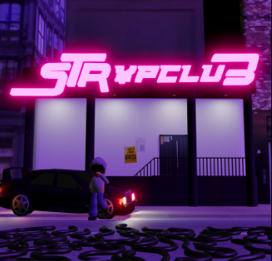
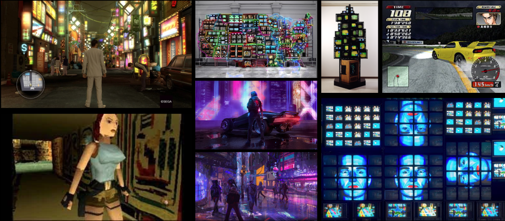

J’ai réalisé une animation 3D du personnage Starfire issu d’une bande dessinée, dans un décor inspiré des rues japonaises et de jeux vidéo. En variant les points de vue, j’ai animé le personnage et monté l’ensemble en synchronisation avec la musique Interlude de l’artiste Che, pour un rendu dynamique et immersif. J’ai également joué avec la saturation des couleurs et les différentes échelles d’images.
Croquis
Version Finale
À partir du croquis d’un musicien indépendant, j’ai donné vie à ses idées en 3D, concrétisant sa vision dans la version finale. J'ai réalisé une pochette d'album ainsi qu'une vidéo promotionnelle aliant 2D et 3D. Le projet présente une scène nocturne, avec une ambiance rétro et néon, centrée sur une voiture, un personnage et un club. L’animation, dans le même univers, sert à promouvoir l’album grâce à une courte vidéo qui renforce l’atmosphère immersive.
Création de visuels animés en 3D sur le logiciel Blender pour le projet musical d'un artiste indépendant. La mise en abyme du logo Oshibaba sur un téléviseur entouré de VHS renforce l’immersion dans l'esthétique rétro et l'ambiance nostalgique. Ces animations, conçues pour promouvoir l'album Oshibaba, sont également disponibles sur Spotify en format vertical.
Cette animation en 3D illustre la découverte d’une cassette perdue. Inspirée d’une célèbre enquête lost media, elle évoque la retrouvaille d’une chanson mystérieuse, surnommée Everyone Knows That Song, dont seul un extrait circulait sur internet depuis 2021. En mai 2024, elle a été identifiée comme issue du film Angels of Passion (1986).
Le terme "lost media" désigne des œuvres (musicales, cinématographiques, télévisuelles, etc.) partiellement ou totalement perdues, souvent redécouvertes grâce aux efforts de communautés en ligne.
J'ai revisité cette scène emblématique du dessin animé japonais Osaka Banpaku partagée en tant que mème et souvent reprise par des internautes sous divers formats. Je l'ai recréee en y apportant ma touche personnelle et en l'adaptant en 3D en m'inspirant du style des jeux vidéos anciens.
Un mème est une image, vidéo ou idée qui se propage sur internet pour son humour ou sa pertinence culturelle, ils sont souvent modifiés ou réinterprétés.
Je m'inspire oeuvres de Nam June Paik, des jeux-vidéos tels que Initial D, Yakuza, Tomb Raider, CyberPunk 2077 et d'autres...
